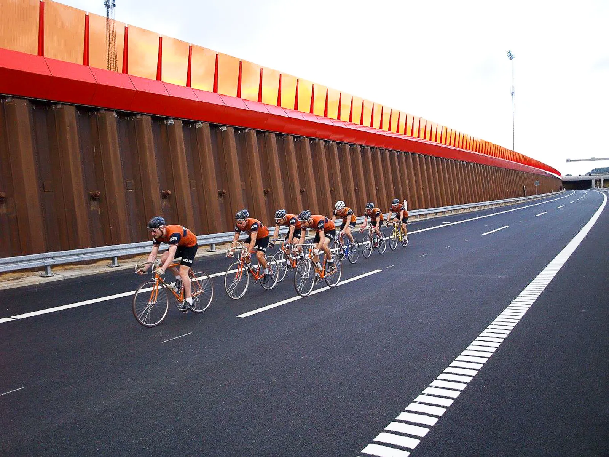
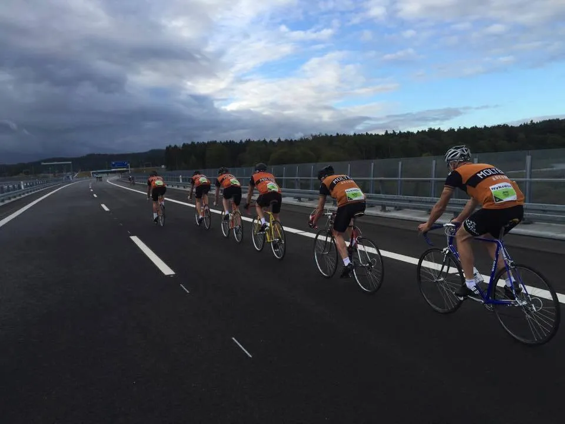
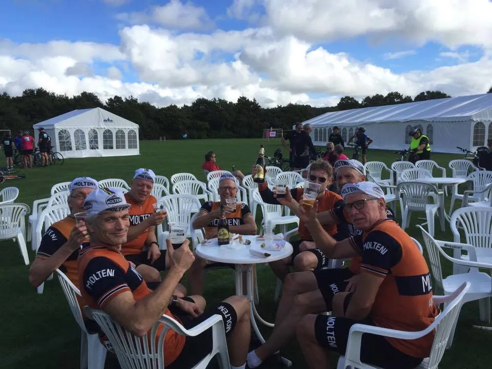

Løbsberetning fra Motorvejsløbet 2016 i Silkeborg

Den nye Silkeborg motorvej skulle åbnes med et brag, og derfor var Squadra Molteni blevet inviteret – 7 stærke mand – til at køre asfalten til på den nye strækning.
– Kan den stå for trykket fra Det Orange Eksprestog, så kan den stå for alt, udtalte motorvejsministeren i sin tale kort før starten.
På globalt plan er det den 12. motorvej som Squadra Molteni kvalitetstester i indeværende sæson.
I kører som vi plejer
Trods et brækket kraveben og en punkteret lunge, mødte Per Sandahl op (selvfølgelig i fuld Molteni-uniform og på cykel) før starten, for at sikre sig at taktikken stadig var klar:
“I kører som vi plejer”, sagde han, før han trillede ind under broen i tørvejr.

Starten var lidt hektisk, og den nye holdopstilling skulle lige køres ind. Der var to nye kandidater til optagelsesprøve: Svend Seegert og Jens Wunderkind (som trådte til i sidste øjeblik som erstatning for Uggi Kaldan). Begge strøg de ud af starthullerne i en fart så man skulle tro de havde varmet op.
Jens Langergaard gav sig fuldt ud de første ti kilometer, men måtte desværre slippe, da jetlag’et fra rejsen til Jylland, satte hårdt ind. Han havde vidst også en familiefrokost han skulle nå.
Regn, sne, hagl, slud og tropetemperaturer. I konstant modvind!
Ruten blev kørte som en sløjfe: 4 km. mod øst for at vende 180 grader, og så 15 km. mod vest for endnu en gang at vende 180 grader, og tonse med 50 km./t. østpå igen de sidste 10 km. ind til målstregen.
Vejret havde lidt svært ved at finde sig til rette på den nye strækning, og det bød på alt fra regn, sne, hagl, slud og tropetemperaturer. I konstant modvind!
– Vi havde hørt om det noget omskiftelige vejr, der ville ramme området, så vi havde sat all-weather-compound-dæk på racerne – og gav dem kun 12 bar, fortæller holdkaptajn Niels Bjørnsteen.
Jens Wunderkind var så stærk og kørte så imponerende, at økonomichef, Kasper Sørensen, var nødt til at bede ham underskrive stagiere-kontrakten under selve løbet, simpelthen for at få ham til at afstå føringen et øjeblik, så resten af holdet kunne få luft.
– Kassen var ellers tom”, udtaler Kasper, men de mange penge vi havde lejet Uggi Kaldan for, gav pludselig luft i økonomien til at hyre Jens Wunderkind.
19. plads ud af 50 hold

Squadra Molteni sluttede som nr. 19 ud af 50 hold – hvoraf 48 var carbonadehold. Squadra Molteni var det suverænt bedste stålhold. Kollegaerne fra Team K-Werk var også med i stærk opstilling, og med en specielt udviklet strategi.
– Det ser ud til, at Team K-Werk er ved at udvikle en ny form formationskørsel. Øjensynligt forsøgte de at danne ordet “K-Werk” med deres position på vejen, formentligt i tilfælde af at tv-helikopteren skulle filme dem oppefra. Meget spændene, men lidt rigelig spatiering mellem bogstaverne, konkluderer Squadra Molteni’s holdkaptajn.
Squadra Molteni kørte vifte på hele vejen, og de konstante accelerationer i skiftene har betydet, at asfalten nu er så beskadiget, at Vejdirektoratet nok må udsætte åbningen af motorvejen.
– Vi ved simpelthen ikke, om vi har mandskab nok til at nå at reparere asfalten i tide efter Squadra Molteni’s vanvidskørsel, udtaler en rasende projektleder fra Vejdirektoratet, som ikke ønsker sit navn frem.
Motorvejsløb Silkeborg var en stor oplevelse. Et fremragende og velgennemført arrangement.
Tak for det.
Data fra Motorvejsløbet 2016
Distance: 32,2
- Tid: 48:51 min
- Snit: 39:51 km/t
Delsnit:
- 10-20 km: 32,5 km/t
- 21-32 km: 50,0 km/t
- Max fart: 59,2 km/t
Øl:
- 7 x 0.5 liter Tuborg fadøl + 2 x 0,75 l. Leffe
Kost:
- 7 x Frankfurter m. brød
